Verify Coreform IGA for Abaqus on a two-material problem: a bimetallic cantilever whose cross-section stacks a stiff layer on a flexible layer, bent by gravity, body force, surface pressure, surface traction, and a concentrated end moment. Each load case is checked against the transformed-section Euler-Bernoulli solution, whose bending stress is discontinuous at the material interface — the feature that distinguishes this problem from its single-material counterpart. The quantity of interest is the tip deflection; the deflection curve and the bending- and shear-stress distributions through the two-material section are also compared against the closed forms along line probes. Two interface workflows are exercised: the two layers merged into a single part sharing interface nodes, and separate parts joined by a tie constraint. All numerical inputs use the millimeter–tonne–second (MMTS) consistent unit system.
2 Geometry
A prismatic two-layer beam of width \(b\) and length \(L\) is shown in Figure 1, with its dimensions provided in Table 1. A flexible layer of height \(h_f\) lies below the interface plane, and a stiff layer of height \(h_s\) lies above it. The interface lies on the \(y = 0\) plane, the cross-section is centered on the \(x\) origin, and the beam axis runs along \(z \in [0, L]\). Verification quantities are sampled along three line probes: the interface line at the section center (\(u_y\)), and the section lines through the two-material stack at midspan and at the clamped end (\(\sigma_{zz}\) and \(\tau_{zy}\)).
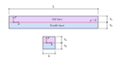
Figure 1: Bimetallic beam geometry: the stiff layer of height \(h_s\) lies above \(y = 0\), and the flexible layer of height \(h_f\) lies below it; both layers have width \(b\) and length \(L\).
Table 1: Geometric parameters.
Quantity
Symbol
Value
Unit
Section width
\(b\)
10
\(\mathrm{mm}\)
Flexible-layer height
\(h_f\)
5
\(\mathrm{mm}\)
Stiff-layer height
\(h_s\)
5
\(\mathrm{mm}\)
Length
\(L\)
100
\(\mathrm{mm}\)
Transformed second moment
\(I_t\)
\(1.52 \times 10^{3}\)
\(\mathrm{mm}^4\)
3 Material
Each layer is a homogeneous, isotropic, linear-elastic material (Table 2). Representative copper and tungsten moduli and densities give the properties a familiar engineering scale and provide a useful stiffness and density contrast; they are not intended as material allowables. The stiff layer is four times stiffer than the flexible layer, giving modular ratio \(n = E_s/E_f = \modularRatio\). Poisson’s ratio is intentionally idealized to zero in both layers so the 3D solid remains compatible with the Euler-Bernoulli accepted solution, which carries no Poisson effect.
Mass density \(\rho\) [\(\mathrm{tonne}/\mathrm{mm}^3\)]
Flexible (\(-h_f \le y < 0\))
copper
\(100 \times 10^{3}\)
0
\(8.90 \times 10^{-9}\)
Stiff (\(0 \le y \le h_s\))
tungsten
\(400 \times 10^{3}\)
0
\(19.2 \times 10^{-9}\)
4 Loading & boundary conditions
The idealized composite beam is clamped at \(z = 0\), as shown in Figure 2. In the three-dimensional solid models, this condition is imposed by pinning the \(z = 0\) face (all translations fixed). Each load case below is applied in its own study. The gravity and body-force cases use identical meshes, material definitions, boundary conditions, and perfectly tied layer interfaces; only the load definition differs.
Figure 2: Idealized clamped boundary condition at \(z = 0\).
4.1 Gravity
A gravity load of magnitude \(g = 9810\ \mathrm{mm}/\mathrm{s}^2\) acts in \(-y\) on the whole body, as shown in Figure 3. The flexible and stiff layers contribute their own weights, so the equivalent distributed line load is \(w = g\,b\,(\rho_f h_f + \rho_s h_s)\).
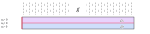
Figure 3: Gravity loading on flexible and stiff layers with densities \(\rho_f\) and \(\rho_s\).
4.2 Body force
An explicitly equivalent body force per unit volume acts in \(-y\), as shown in Figure 4. Its magnitude is defined separately in each layer as
\[
q_f = \rho_f g,
\qquad
q_s = \rho_s g.
\]
The gravity translator supplies \(g\), and Coreform IGA multiplies it by the material density at each quadrature point; the explicit body-force case supplies the resulting \(q_i\) directly. Consequently, the two load cases produce the same force density pointwise, rather than merely the same section resultant. The two layers remain separate load targets and are joined by a perfect tie, which represents the ideal bond assumed by transformed-section beam theory.
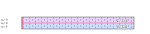
Figure 4: Layer-specific body-force loading in the \(-y\) direction, with \(q_f=\rho_f g\) in copper and \(q_s=\rho_s g\) in tungsten.
4.3 Pressure
A uniform normal pressure is applied to the stiff layer’s top face (\(y = +h_s\)), as shown in Figure 5. It reduces to the equivalent distributed line load \(w\).
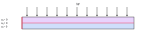
Figure 5: Top-face pressure loading represented by the equivalent line load \(w\).
4.4 Surface traction
A uniform shear traction on the end face (\(z = L\)) acts in \(-y\), giving the resultant tip load \(P = t\,b\,(h_f + h_s)\) shown in Figure 6. This load case is also run with the tie-constraint interface workflow.
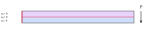
Figure 6: End-face shear traction represented by the resultant tip load \(P\).
4.5 End moment
A concentrated moment \(M_0\) about \(x\) is applied at the beam tip, as shown in Figure 7. In the three-dimensional solid models, it is applied to a reference point at the centroid of the end face and transmitted through a kinematic coupling to the whole face.
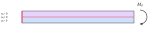
Figure 7: Concentrated end moment \(M_0\) about the \(x\) axis.
Coreform IGA discretizes the beam with immersed, trimmed U-splines: a structured rectilinear background grid with \(p\) padding elements per side is trimmed to the beam. The background element sizes are \((5, 5, 10)/2^{k}\) in \((x, y, z)\) for refinement levels \(k = 0,\dots,3\), at degrees \(p = 1\), \(2\), and \(3\) with maximum continuity \(C^{p-1}\) within each layer. The material interface is resolved by the geometry rather than the grid: in the merged workflow the two layers form one part whose interface faces share nodes, and in the tie workflow the layers remain separate parts coupled by a tie constraint. Every load case runs on this same mesh sweep, so the meshes are shown once — the tabs below render each refinement level from the gravity study’s IGA results databases.
The accepted solutions are the transformed-section Euler-Bernoulli closed forms [1]: the stiff layer is scaled by the modular ratio \(n = E_s/E_f\) into an equivalent single-material section, giving the neutral-axis height and the transformed second moment of area
where \(A_f = b h_f\) and \(A_s = b h_s\) are the layer areas and \(\hat{y}_f\), \(\hat{y}_s\) their centroid heights. For this section the neutral axis sits at \(y = \neutralAxis\) — inside the stiff layer, above the material interface. The section resultants \(V(z)\), \(M(z)\) and the deflection \(u_y(z)\) then follow the standard cantilever closed forms with flexural rigidity \(E_f I_t\); the distributed cases (gravity, body force, pressure) reduce to a uniform line load \(w\), the traction case to a tip load \(P\), and the end moment to a constant moment \(M_0\). The stresses recover the two-material behavior:
so the bending stress is discontinuous at the material interface — it jumps by the factor \(n\) — while the shear stress, built from the transformed first moment \(Q(y)\), remains continuous. The transformed-section model is itself an approximation of the 3D solid (it neglects shear deformation, and the pinned end face is stiffer than the idealized support), so exact agreement is not expected; the acceptance criterion is the tip deflection matching within 5%.
Table 4: Equivalent loads and transformed-section tip deflections.
Each load case below reports the tip deflection against the transformed-section value (rows are the \(h\)-sweep; one tab per degree, and the degree tabs switch together across load cases), the four verification profiles against the closed forms (one figure per probe quantity, a subfigure per degree), full-span line-probe absolute \(L^2\) self-convergence against the same-degree \(h_3\) profile, and the axial-stress contours for every test case on a shared color scale capped at the transformed-section peak. The midspan and clamped-section stress profiles cross the material interface, where the closed-form bending stress jumps by the modular ratio. The trilinear \(p=1\) cases can lock in bending on the coarser meshes, so those levels are retained as record-only diagnostics; the finest \(h_3\) result carries the same 5% tip-deflection acceptance criterion as the higher-degree cases.
7.1 Gravity
Transformed-section tip deflection: \(-1.13 \times 10^{-3}\).
Figure 8: Gravity: deflection along the interface line — coarse→fine sweep per degree vs the transformed section.
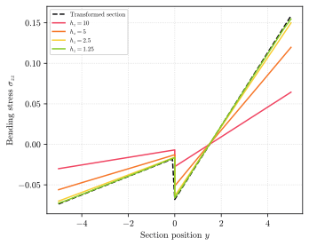
(a) \(p = 1\)
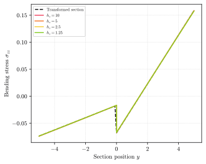
(b) \(p = 2\)
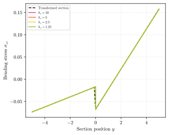
(c) \(p = 3\)
Figure 9: Gravity: bending stress through the midspan section — the closed form jumps by the modular ratio at the material interface (\(y = 0\)).
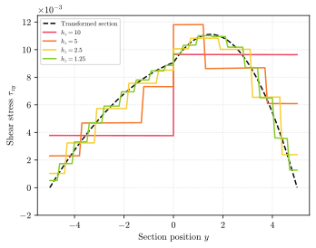
(a) \(p = 1\)
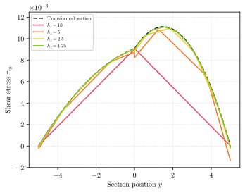
(b) \(p = 2\)
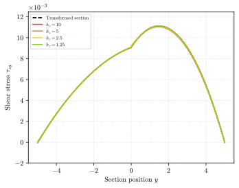
(c) \(p = 3\)
Figure 10: Gravity: shear stress through the midspan section — continuous across the interface, with its maximum at the neutral axis.
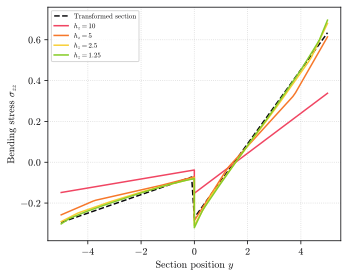
(a) \(p = 1\)
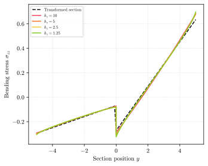
(b) \(p = 2\)
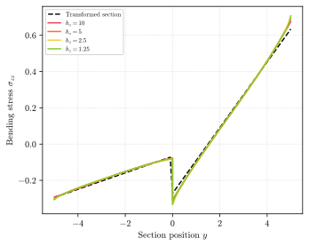
(c) \(p = 3\)
Figure 11: Gravity: bending stress through the clamped section, where the moment (and the interface jump) is largest.
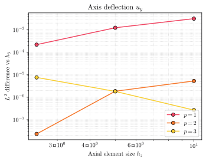
(a) Interface deflection \(u_y\)
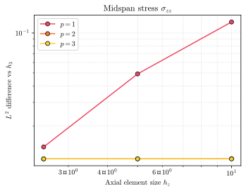
(b) Midspan stress \(\sigma_{zz}\)
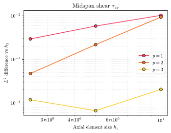
(c) Midspan shear \(\tau_{zy}\)
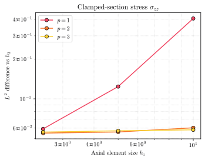
(d) Clamped-section stress \(\sigma_{zz}\)
Figure 12: Gravity: full-span line-probe absolute L2 self-convergence. Each degree is compared against its own h3 profile; the h3 point is omitted because its self-error is zero.
Figure 13: Body force: deflection along the interface line — coarse→fine sweep per degree vs the transformed section.
(a) \(p = 1\)
(b) \(p = 2\)
(c) \(p = 3\)
Figure 14: Body force: bending stress through the midspan section — the closed form jumps by the modular ratio at the material interface (\(y = 0\)).
(a) \(p = 1\)
(b) \(p = 2\)
(c) \(p = 3\)
Figure 15: Body force: shear stress through the midspan section — continuous across the interface, with its maximum at the neutral axis.
(a) \(p = 1\)
(b) \(p = 2\)
(c) \(p = 3\)
Figure 16: Body force: bending stress through the clamped section, where the moment (and the interface jump) is largest.
(a) Interface deflection \(u_y\)
(b) Midspan stress \(\sigma_{zz}\)
(c) Midspan shear \(\tau_{zy}\)
(d) Clamped-section stress \(\sigma_{zz}\)
Figure 17: Body force: full-span line-probe absolute L2 self-convergence. Each degree is compared against its own h3 profile; the h3 point is omitted because its self-error is zero.
Figure 18: Pressure: deflection along the interface line — coarse→fine sweep per degree vs the transformed section.
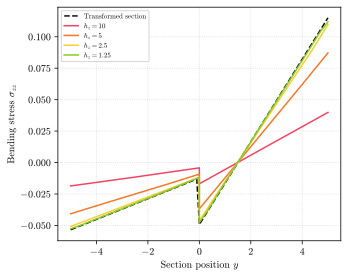
(a) \(p = 1\)
(b) \(p = 2\)
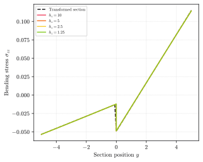
(c) \(p = 3\)
Figure 19: Pressure: bending stress through the midspan section — the closed form jumps by the modular ratio at the material interface (\(y = 0\)).
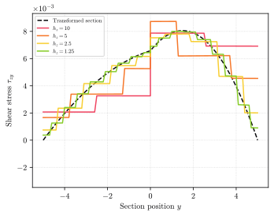
(a) \(p = 1\)
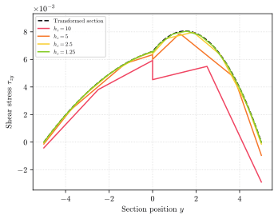
(b) \(p = 2\)
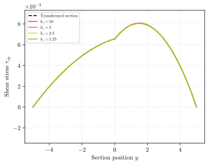
(c) \(p = 3\)
Figure 20: Pressure: shear stress through the midspan section — continuous across the interface, with its maximum at the neutral axis.
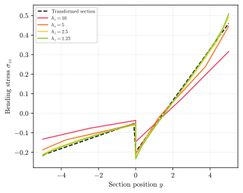
(a) \(p = 1\)
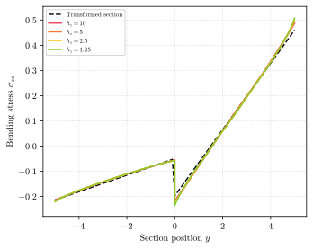
(b) \(p = 2\)
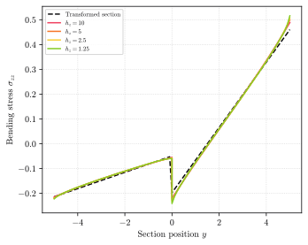
(c) \(p = 3\)
Figure 21: Pressure: bending stress through the clamped section, where the moment (and the interface jump) is largest.
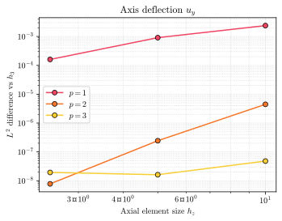
(a) Interface deflection \(u_y\)
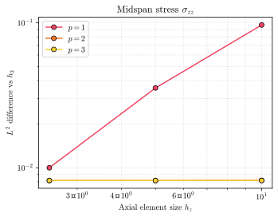
(b) Midspan stress \(\sigma_{zz}\)
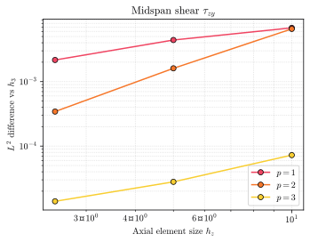
(c) Midspan shear \(\tau_{zy}\)
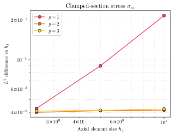
(d) Clamped-section stress \(\sigma_{zz}\)
Figure 22: Pressure: full-span line-probe absolute L2 self-convergence. Each degree is compared against its own h3 profile; the h3 point is omitted because its self-error is zero.
The traction studies also run with the tie-constraint interface workflow: the two layers remain separate parts and are joined by a tie constraint instead of sharing interface nodes. Both workflows discretize the same problem, so their tip deflections must agree (Table 5).
Table 5: Interface workflows compared on the traction case.
Figure 23: Surface traction: deflection along the interface line — coarse→fine sweep per degree vs the transformed section.
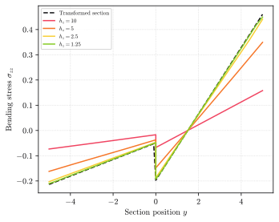
(a) \(p = 1\)
(b) \(p = 2\)
(c) \(p = 3\)
Figure 24: Surface traction: bending stress through the midspan section — the closed form jumps by the modular ratio at the material interface (\(y = 0\)).
(a) \(p = 1\)
(b) \(p = 2\)
(c) \(p = 3\)
Figure 25: Surface traction: shear stress through the midspan section — continuous across the interface, with its maximum at the neutral axis.
(a) \(p = 1\)
(b) \(p = 2\)
(c) \(p = 3\)
Figure 26: Surface traction: bending stress through the clamped section, where the moment (and the interface jump) is largest.
(a) Interface deflection \(u_y\)
(b) Midspan stress \(\sigma_{zz}\)
(c) Midspan shear \(\tau_{zy}\)
(d) Clamped-section stress \(\sigma_{zz}\)
Figure 27: Surface traction: full-span line-probe absolute L2 self-convergence. Each degree is compared against its own h3 profile; the h3 point is omitted because its self-error is zero.
Figure 28: End moment: deflection along the interface line — coarse→fine sweep per degree vs the transformed section.
(a) \(p = 1\)
(b) \(p = 2\)
(c) \(p = 3\)
Figure 29: End moment: bending stress through the midspan section — the closed form jumps by the modular ratio at the material interface (\(y = 0\)).
(a) \(p = 1\)
(b) \(p = 2\)
(c) \(p = 3\)
Figure 30: End moment: shear stress through the midspan section — the closed-form shear is identically zero for a constant moment.
(a) \(p = 1\)
(b) \(p = 2\)
(c) \(p = 3\)
Figure 31: End moment: bending stress through the clamped section — for a constant moment the interface jump is the same at every section.
(a) Interface deflection \(u_y\)
(b) Midspan stress \(\sigma_{zz}\)
(c) Midspan shear \(\tau_{zy}\)
(d) Clamped-section stress \(\sigma_{zz}\)
Figure 32: End moment: full-span line-probe absolute L2 self-convergence. Each degree is compared against its own h3 profile; the h3 point is omitted because its self-error is zero.
Performance is reported separately for the two stages of each immersed IGA analysis: trimming (building the trimmed U-spline basis on the immersing grid) and the Abaqus solve. Each load case uses the same mesh sweep, but timings are reported per load case because each study was executed independently.
Every load case converges under mesh refinement, with the tip deflection inside the acceptance tolerance on the finer meshes and the profile comparisons tracking the transformed-section closed forms — including the bending-stress discontinuity at the material interface, which the two-material discretization must capture without smearing. Against the transformed-section model the error plateaus: the residual is the beam theory’s own modeling error (no shear deformation, and the pinned end face is stiffer than the idealized support), not a discretization error, so the line-probe convergence figures use self-convergence against the same-degree finest profiles instead of treating the closed form as truth. That the merged-part and tie-constraint interface workflows land on the same solution verifies that the tie constraint transmits the interface tractions consistently with the shared-node discretization. The gravity and body-force cases have identical pointwise force-density fields and are required to produce probe results that agree to within solver roundoff, directly verifying the translation of GRAV into density-weighted IGA body-force components. The pressure case belongs to the same uniformly distributed-load closed-form family but has its own independently specified magnitude.
References
[1]
J. M. Gere and S. P. Timoshenko, Mechanics of materials, 4th ed. Boston: PWS Publishing Company, 1997.
Appendix
9.1 Capabilities exercised
The table is generated from current passing simulation and study artifacts. Each row must satisfy the linked capability card’s evidence contract; declaring a capability in a test does not, by itself, create evidence.
Table 6: Capabilities exercised by the current verification artifacts.
The decks below are reproduced from the verification tests’ Abaqus input files with comments stripped and instance-specific names (sets, materials, files) redacted to <placeholders>.